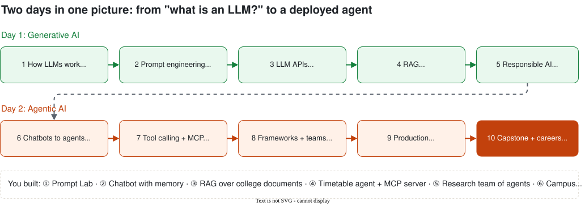

Mini Project and Careers
Time to put it all together. First you'll build the campus helpdesk agent, using everything from the two days in one notebook. Then we'll talk about where this can take you: the jobs, what to learn next, and how to build a portfolio that gets interviews.
1. Two days in one picture

Two days ago, an LLM was something you chatted with. Now you know how it works inside, how to prompt it, call it from code, ground it in your own documents, keep it safe, give it tools, organise agents into teams, and ship it. That's the core skill set of an AI engineer.
2. The capstone: campus helpdesk agent
A student asks: "When is my OS exam? Is the library open the day before? And what's the late fee if I pay my fees late?" Your agent answers all three, using the right tool for each, and remembers who it's talking to.

| Piece | What it does | From |
|---|---|---|
| System prompt | Role, rules, "cite sources", "never guess" | Session 2 |
| Memory | Remembers the conversation (only questions and answers, so it stays small) | Session 3 |
search_faq tool | RAG over the college FAQ, now as a tool the agent chooses to use | Session 4 |
| Guardrails | Injection check and personal-data masking | Session 5 |
| Agent loop | The model picks tools until it can answer | Sessions 6–7 |
| Live tools | Exam timetable, library hours, weather (read-only) | Session 7 |
| Evals | 6 test cases before you share it | Session 9 |
| Chat web page | Gradio: a shareable link you can open on your phone | New today |
The key new idea: RAG as a tool
In Session 4, the bot always searched the FAQ. Now search_faq is just one of the agent's tools. For "When is my OS exam?" it calls the timetable; for "What's the hostel fee?" it searches the FAQ; for "Hi!" it calls nothing. The agent decides.
def search_faq(question: str) -> dict:
"""Search the college FAQ (rules about exams, attendance, fees, hostel, library, placements...)."""
q = embedder.encode([question], normalize_embeddings=True).tolist()
res = col.query(query_embeddings=q, n_results=3)
hits = [{"source": m["source"], "text": t, "score": round(1 - d / 2, 2)}
for t, m, d in zip(res["documents"][0], res["metadatas"][0], res["distances"][0])]
hits = [h for h in hits if h["score"] >= MIN_SCORE]
return {"results": hits} if hits else {"results": [], "note": "Nothing relevant in the FAQ."}
TOOLS = {f.__name__: f for f in (search_faq, get_exam_date, get_library_hours, get_weather)}A conversation with your agent
🧑 Hi, I'm Priya from CSE, 3rd year.
🤖 Hi Priya! How can I help?
🧑 When is my OS exam?
🛠️ get_exam_date({'subject': 'OS'})
🤖 Your OS exam is on Monday 14 December at 2 PM in Hall A.
🧑 Is the library open the day before? I want to study there.
🛠️ get_library_hours({'date': '2026-12-13'})
🤖 Yes! Sunday 13 December is in exam month, so it's open 10 AM to 4 PM.
🧑 What's the late fee if I pay my second fee instalment late?
🛠️ search_faq({'question': 'late fee second instalment'})
🤖 ₹100 per day after 15 January, up to ₹2,000 [Fees].
🧑 Thanks! By the way, what's my name and branch?
🤖 You're Priya, from CSE.Notice the third question: "the day before" only makes sense because of memory. The agent remembered the OS exam date from the previous turn and worked out the Sunday by itself.
Lab steps (30 min)
- Build the knowledge base: chunk, embed and store the FAQ.
- Set up the four read-only tools, including
search_faq. - Write the system prompt and guardrails.
- Build
chat(): guardrails → memory → agent loop → output check. - Have the five-turn conversation above.
- Run the evals.
- Launch the Gradio chat page and open it on your phone.
3. AI careers: the roles

| Role | A typical day | You'd enjoy it if... |
|---|---|---|
| GenAI app developer | Add a "chat with your documents" feature to the company app; tune prompts; connect a vector DB | You like building features people use |
| AI engineer | Build an agent with tools, write evals, look at traces to find why answers are wrong, cut the cost per request | You like engineering, debugging and making things reliable |
| Forward deployed engineer | Sit with a bank's or hospital's team, understand their messy problem, prototype an AI solution in days, and get it into their real systems | You like people, variety, and seeing direct impact |
| ML engineer / data scientist | Prepare data, train or fine-tune a model, run experiments, measure accuracy, deploy and monitor the model | You like maths, data and experiments |
Related roles: MLOps / LLMOps engineer (infrastructure for models), AI product manager (decides what to build), solutions architect (designs AI systems for clients), and AI safety / red-team roles. "Prompt engineer" is now usually a skill inside these jobs rather than a job of its own.
4. What companies look for
| Skill | How to show it |
|---|---|
| Fundamentals: Python, Git, SQL, APIs, DSA | Clean code on GitHub; coding rounds |
| Building with LLMs: prompts, RAG, tools, agents | Deployed projects (like your capstone) |
| Judgement: when to use RAG vs an agent vs a workflow; when not to use AI | Explain your design choices in the README and in interviews |
| Quality: evals, testing, debugging with traces | An eval set and results in your repo |
| Responsibility: safety, privacy, cost awareness | Guardrails and a "limitations" section in your README |
| Communication: explaining clearly to non-experts | A blog post or LinkedIn post about what you built |
5. Your next 90 days

Pick a track by what excited you most in these two days: answering from documents (RAG), tools and agents, or how models learn (ML). Depth in one beats a little of everything.
6. A portfolio that gets interviews
Recruiters spend about a minute on your GitHub. Make that minute count:
- Three good projects beat ten tutorials. Your capstone is the first one.
- Solve a real problem for a real person, even a small one: your club's FAQ bot, a professor's question-paper search.
- A README that sells it: one-line summary, a screenshot or GIF, an architecture diagram, how to run it, example questions, eval results, and known limitations.
- A live link (Gradio, Hugging Face Spaces, Render or Cloud Run) so people can try it in 10 seconds.
- Show your thinking: "I used RAG instead of fine-tuning because...", "I tested 3 chunk sizes and 200 words gave the best hit rate."
- No secrets in the repo. Check twice for API keys.
7. Interview questions you can now answer
"How does an LLM generate text?"
It predicts the next token from the tokens so far, again and again, picking from a probability list (temperature controls how adventurous). Session 1."How would you reduce hallucination?"
Ground it with RAG and citations, allow "I don't know", lower temperature, use tools for facts, evaluate, and keep a human in the loop for important answers. Sessions 1, 4, 5."Explain RAG. When would you use it instead of fine-tuning?"
Retrieve relevant chunks, add them to the prompt, generate with citations. Use it when the knowledge is private or changes often; fine-tuning is for changing style or behaviour, is costly, and goes stale. Session 4."Your RAG bot gives wrong answers. How do you debug it?"
Look at the retrieved chunks first: most bugs are retrieval bugs. Check text extraction, chunk size, k, the score threshold; try hybrid search; measure the hit rate on a test set. Session 4."What is an AI agent? When would you not use one?"
An LLM that works towards a goal by choosing and calling tools in a loop. Don't use one when a single call, RAG or a fixed workflow works: agents cost more, are slower and harder to test. Session 6."How does function calling work?"
You send tool declarations; the model replies with a function name and arguments; your code runs it and sends the result back; repeat until it answers. Session 7."What is MCP and why does it matter?"
An open standard for connecting AI apps to tools and data: build a server once, use it from any MCP app (host, client, server; stdio or HTTP). Session 7."How do you evaluate and monitor an LLM app in production?"
An eval set (correct, grounded, right tool, refusals, safety) run on every change and in CI; traces for every request; dashboards for latency, errors, cost and user feedback; alerts. Session 9."How would you protect an agent from prompt injection?"
No single fix: separate data from instructions, least-privilege tools, human approval for risky actions, input and output checks, no secrets in prompts, logging. Sessions 5, 9."Design a chatbot for 10,000 college students." (system design)
RAG over official documents + read-only tools for live data, behind an API with login and rate limits; small model for most questions; caching; evals in CI; tracing and dashboards; pilot first. Sessions 4–9.8. Free resources
| Track | Where to learn (free) |
|---|---|
| LLM apps, RAG, agents | DeepLearning.AI short courses · Hugging Face LLM Course and Agents Course · Anthropic's courses on GitHub (anthropics/courses) · LangChain Academy |
| ML and deep learning foundations | fast.ai Practical Deep Learning for Coders · Google Machine Learning Crash Course · NPTEL machine learning courses · Kaggle Learn |
| Practice and community | Kaggle competitions · Smart India Hackathon · Google Summer of Code · open-source AI projects on GitHub |
| Staying current | Official blogs and docs of the model providers; pick 2–3 and read them weekly, rather than following hype |
Certificates (for example, cloud AI certifications from AWS, Microsoft or Google) can help, especially for services companies. But a deployed project you can demo and explain is worth more in almost every interview.
9. Two-day review quiz
1. Why does a chatbot "forget" the start of a long conversation? (Session 1)
The conversation exceeded the context window; older messages were dropped or summarised.2. Name the six parts of a good prompt. (Session 2)
Role, Task, Context, Examples, Format, Rules.3. How does a chatbot remember your name if the model has no memory? (Session 3)
The app re-sends the conversation history with every request.4. What do you check first when a RAG answer is wrong? (Session 4)
Which chunks were retrieved.5. What's the difference between direct and indirect prompt injection? (Session 5)
Direct: the user types it. Indirect: hidden in content the bot reads.6. Workflow vs agent: who decides the next step? (Session 6)
Workflow: your code. Agent: the LLM.7. Who runs a tool: the model or your code? (Session 7)
Your code. The model only asks.8. Name two multi-agent patterns. (Session 8)
Any two: pipeline, orchestrator–workers, planner–executor, reviewer loop.9. When do you run your eval set? (Session 9)
After every change, and in CI before deploying.10. In the capstone, why is RAG a tool instead of always running? (Session 10)
So the agent decides: it searches the FAQ for rules, calls the timetable for exam dates, and calls nothing for "hi". Fewer wasted calls and better answers.Instructor guide
Suggested plan for the 60 minutes. Press S in the slides to open speaker notes.
| Time | Segment | What to do |
|---|---|---|
| 0–5 min | Two days in one picture | Journey diagram. Ask the class to name one thing from each session. |
| 5–10 min | Capstone intro | Architecture; "RAG as a tool". Show the five-turn conversation. |
| 10–35 min | Capstone lab | Pairs run the notebook through the Gradio link. Walk around; help with keys and rate limits. |
| 35–40 min | Demos | 2–3 pairs show their agent on the projector (or on a phone via the Gradio link). |
| 40–52 min | Careers | Roles diagram and table; what companies look for; 90-day roadmap; portfolio tips. |
| 52–57 min | Interview questions | Ask 3–4 aloud; let students answer from what they learned. |
| 57–60 min | Close | Thank you; share the repo link; collect feedback; certificates if the college provides them. |